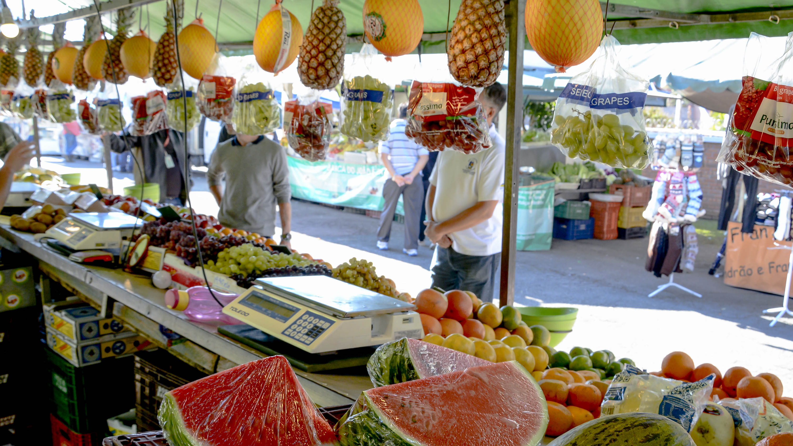
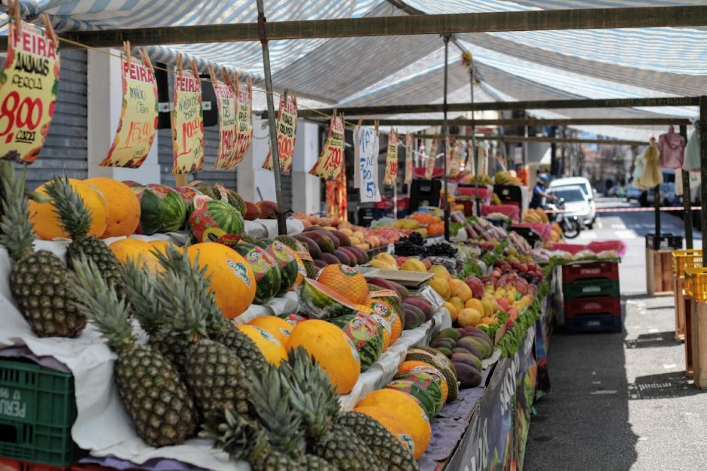
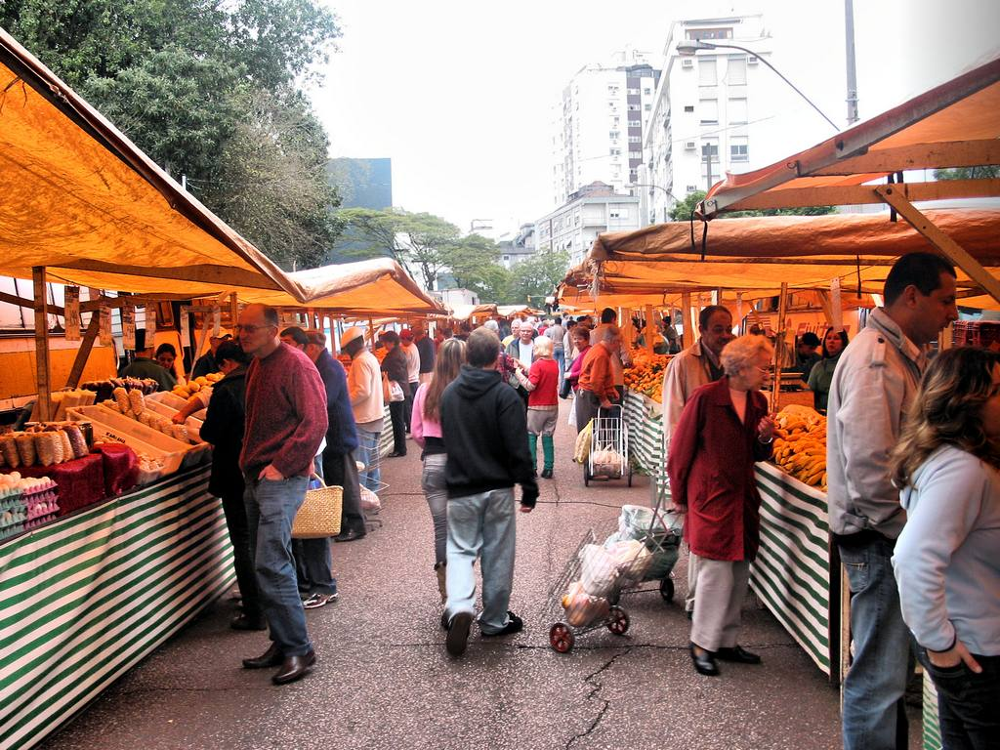
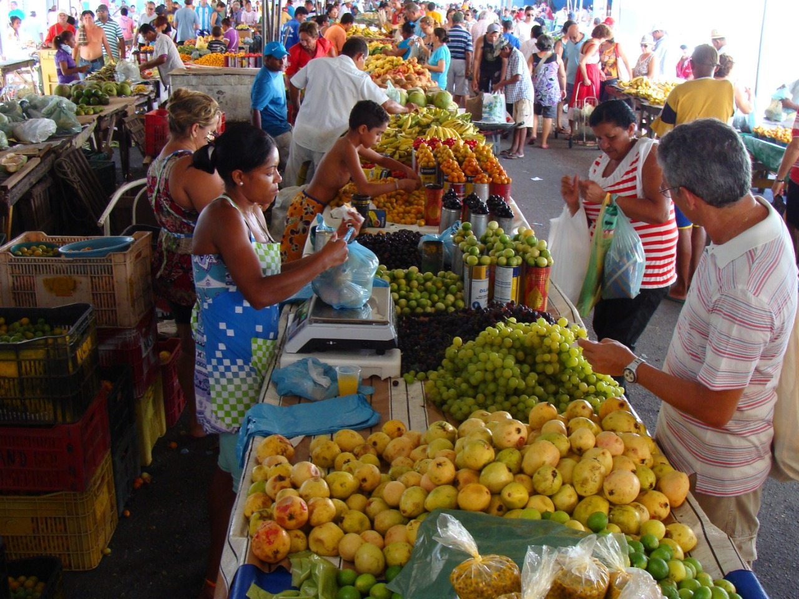

Feira da Praça Central
Categoria: Comidas Prontas
Endereço: Rua das Palmeiras, 120
Dias: Seg a Sex
Horário: 8h às 13h

Feira do Bairro Jardim
Categoria: Produtos artesanais
Endereço: Av. das Flores, 350
Dias: Ter e Qui
Horário: 9h às 17h

Feira Orgânica Saúde
Categoria: Orgânicos
Endereço: Praça da Saúde, 55
Dias: Sab e Dom
Horário: 6h às 13h

Feira do Parque Verde
Categoria: Hortifruti
Endereço: Rua dos Ipês, 507
Dias: Qui e Sex
Horário: 6h às 18h

Feira da Bela Vista
Categoria: Sucos naturais
Endereço: Rua das Laranjas, 312
Dias: Sex a Dom
Horário: 7h às 15:30h

Feira da Praça do Sol
Categoria: Artesanato
Endereço: Rua das Acácias, 233
Dias: Qui a Dom
Horário: 9h às 19h